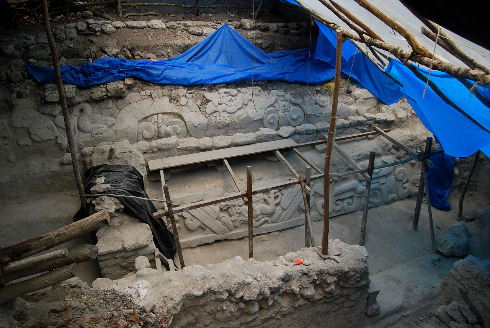
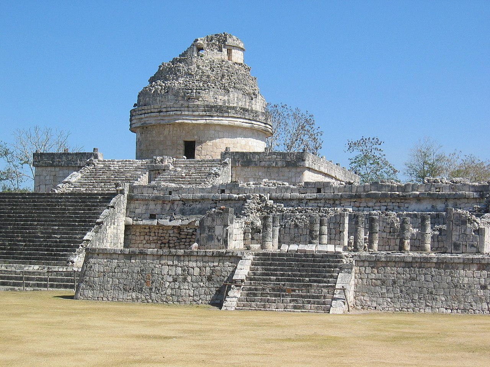
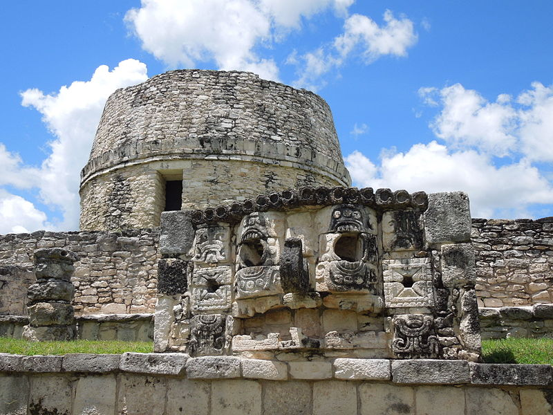
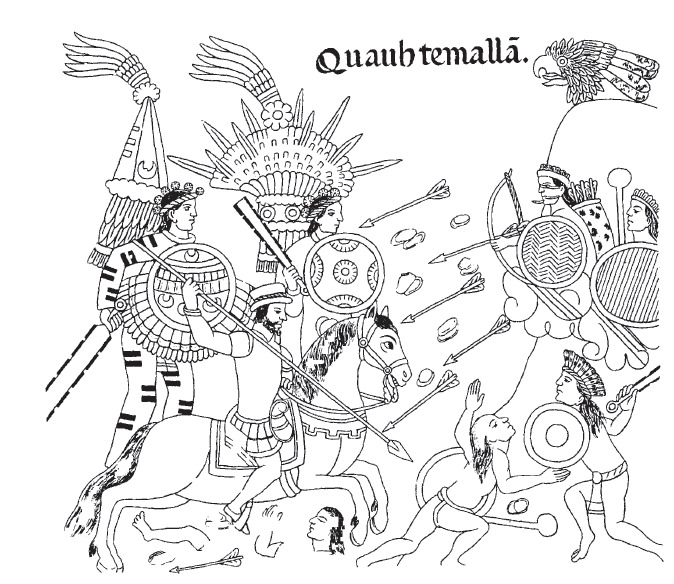

The Maya people were an ancient Mesoamerican civilization; they lived in modern day Guatemala, Belize, and the Yucatán Peninsula in Mexico. Today, they're known for their art, architecture, mathematics, calendar, and astronomical system. Hopefully this website can help you to learn more about them!
As early as 1500 BCE the Maya had settled in villages and were practicing agriculture. The Classic Period of Mayan culture lasted from about 250 CE until about 900. At its height, Mayan civilization consisted of more than 40 cities, each with a population between 5,000 and 50,000. During the Postclassic Period (900–1539 CE), cities in the Yucatán Peninsula continued to flourish for several centuries after the great cities of lowland Guatemala had become depopulated.
Timeline
Preclassic period
(c. 2000 BCE–250 CE)

El Mirador, in the lowlands, was an important in the Late Preclassic Period.
The Maya developed their first civilization in the Preclassic period. Maya occupation in modern-day Belize has been carbon dated to around 2600 BCE. Settlements were established around 1800 BCE in the Soconusco region of the Pacific coast, and the Maya were already cultivating the staple crops of maize, beans, squash and chili pepper. This period was characterised by sedentary communities and the introduction of pottery and fired clay figurines.
During the Middle Preclassic Period (c. 950–400 BCE), small villages began to grow to form cities. Nakbe in the Petén department of Guatemala is the earliest well-documented city in the Maya lowlands, where large structures have been dated to around 750 BCE. The northern lowlands of Yucatán were widely settled by the Middle Preclassic. In the Late Preclassic Period (c. 400 BCE–250 CE), the enormous city of El Mirador grew to cover approximately 16 square kilometres.
Classic period
(c. 250–900 CE)

Chichen Itza was the most important city in the northern Maya region.
The Classic period is largely defined as the period during which the lowland Maya raised dated monuments using the Long Count calendar. This period marked the peak of large-scale construction and urbanism, the recording of monumental inscriptions, and demonstrated significant intellectual and artistic development, particularly in the southern lowland regions. The Classic period Maya political landscape has been likened to that of Renaissance Italy or Classical Greece, with multiple city-states engaged in a complex network of alliances and enmities. The largest cities had populations numbering 50,000 to 120,000 and were linked to networks of subsidiary sites.
During the Early Classic (c. 250–550 CE) cities throughout the Maya region were influenced by the great metropolis of Teotihuacan in the distant Valley of Mexico.
During the 9th century CE, the central Maya region suffered major political collapse, marked by the abandonment of cities, the ending of dynasties, and a northward shift in activity. During this period, known as the Terminal Classic, the northern cities of Chichen Itza and Uxmal showed increased activity. Major cities in the northern Yucatán Peninsula continued to be inhabited long after the cities of the southern lowlands ceased to raise monuments.
Postclassic period
(c. 950–1539 CE)

Mayapan was an important Postclassic city in the northern Yucatán Peninsula.
Although much reduced, a significant Maya presence remained into the Postclassic period after the abandonment of the major Classic period cities; the population was particularly concentrated near permanent water sources. Unlike previous cycles of contraction in the Maya region, abandoned lands were not quickly resettled in the Postclassic. After the decline of Chichen Itza, the Maya region lacked a dominant power until the rise of the city of Mayapan in the 12th century.
The Postclassic period was marked by changed from the preceding Classic period. The once-great city of Kaminaljuyu in the Valley of Guatemala was abandoned after continuous occupation of almost 2,000 years. Across the highlands and neighbouring Pacific coast, long-occupied cities in exposed locations were relocated, apparently due to a proliferation of warfare. One of the most important cities in the Guatemalan highlands at this time was Q'umarkaj, the capital of the aggressive K'iche' kingdom.
Mayapan was abandoned around 1448, after a period of political, social and environmental turbulence that in many ways echoed the Classic period collapse in the southern Maya region. The abandonment of the city was followed by a period of prolonged warfare, disease and natural disasters in the Yucatán Peninsula, which ended only shortly before Spanish contact in 1511.
Spanish conquest
(1511–1697 CE)

Page from the Lienzo de Tlaxcala showing the Spanish conquest of Iximche, known as Cuahtemallan in the Nahuatl language.
In 1511, a Spanish caravel was wrecked in the Caribbean, and about a dozen survivors made landfall on the coast of Yucatán. They were seized by a Maya lord, and most were sacrificed, although two managed to escape. From 1517 to 1519, three separate Spanish expeditions explored the Yucatán coast, and engaged in a number of battles with the Maya inhabitants. After the Aztec capital Tenochtitlan fell to the Spanish in 1521, Hernán Cortés despatched Pedro de Alvarado to Guatemala with 180 cavalry, 300 infantry, 4 cannons, and thousands of allied warriors from central Mexico; they arrived in Soconusco in 1523.
Shortly afterwards, the Spanish were invited as allies into Iximche, the capital city of the Kaqchikel Maya kingdom. Good relations did not last, due to excessive Spanish demands for gold as tribute, and the city was abandoned a few months later. This was followed by the fall of Zaculeu, the Mam Maya capital, in 1525. Francisco de Montejo and his son launched a long series of campaigns against the polities of the Yucatán Peninsula in 1527, and finally completed the conquest of the northern portion of the peninsula in 1546. In 1697, Martín de Ursúa launched an assault on the Itza capital Nojpetén and the last independent Maya city fell to the Spanish.
Language
The Mayan languages form a language family spoken in Mesoamerica, both in the south of Mexico and northern Central America. Mayan languages are spoken by at least 6 million Maya people, primarily in Guatemala, Mexico, Belize, El Salvador and Honduras.
The Mayan language family is one of the best-document and most studied in the Americas. Modern Mayan languages descend from the proto-Mayan language, thought to have been spoken at least 5,000 years ago. The proto-Mayan language diversified into at least six different branches: the Huastecan, Quichean, Yucatecan, Qanjobalan, Mamean and Ch'olan–Tzeltalan branches.
Yucatec Maya
A Yucatec Maya speaker singing with a guitar.
Yucatec Maya is spoken in the Yucatán Peninsula and northern Belize. Its speakers refer to the language as Maya, or màaya t'àan. The word Maya itself comes from the Yucatec Maya mayab, meaning "flat".
Before the Spanish conquest of Yucatán, Yucatec Maya was written using Maya script. This consisted of a relatively elaborate set of glyphs, which were laboriously painted on ceramics, walls and bark-paper codices, or carved in wood or stone. Individual glyphs could represent either a word or a syllable, and the same glyph could often be used for both.